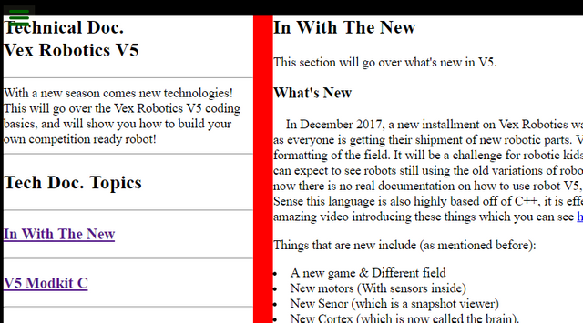
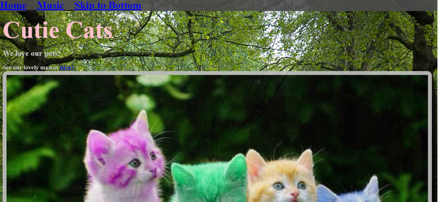

C.H.D. (C++, Arduino - Hardware Engineer)

CHD (pronounce Chad), short for Christmas hack decorations, was a personal
project I did in my freetime. My goal was to
learn more about hardware, by hacking christmas lights and making them flash to music. I still
use these lights til this day, and they make great party lights.
After burning 7 fuses, and desperately looking for information from friends and the internet. I
was finally able to put everything together, and figure it all out in under 2 weeks. Learning
how Audrino, currents, and microphone information. I also
wrote an article so that others could learn from my mistakes. See more here!
Technical Document (HTML5/CSS3 - Web Designer)

This is the 'scientific document' of the internet, designed towards helping
people learn things in a clear and concise
manner. The project was aimed towards teaching others how to code using this format. I displayed
my abilities in my knowledge in other codes than just css and html, as well as showed a well
designed website with helpful information which has already
helped robotic kids get a great first time understanding of what programming in v5 is like, and
how alike it is to the native languege of c++. See more
here.
Small Survey (HTML5/CSS3 - Web Designer)

This is a small survey project, and another step towards my Web Designer
Certificate. I can make custom ones just for you, and you can
send it to all of your friends. This site is very small and simple, but it shows potential uses
in more organized online applications which are used almost completely over paper applications.
Whether if it's for a job, college, or just a simple quiz
about you. This website displays that I can make it for you! See more
here.
Pet Shop (HTML5/CSS3 - Web Designer)

My first real practice website I ever made when learning HTML5 and CSS3. I
started after my first hackathon and was taking
online courses from FreeCodeCamp. This website displays most of my capabilities, and the coding
is designed to help with both my memory, and others who read it. I have learned a lot more sense
than, but it's still one of my favorite worked on
projects. See more
here.